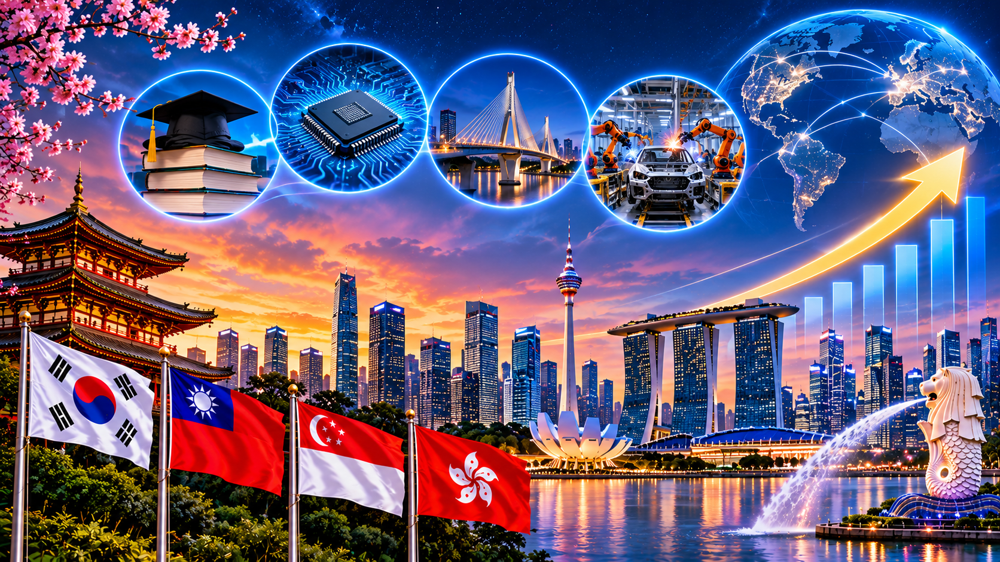

O desenvolvimento dos Tigres Asiáticos demonstra como os investimentos em educação, tecnologia, infraestrutura e indústria podem transformar a economia de um país. Atualmente, essas economias são referências de crescimento e desenvolvimento na Ásia.

*Este é um site produzido pelo amor do Italo S2!! E UM BEIJÃO TIA DANI, SAUDADES!! ❤️❤️❤️